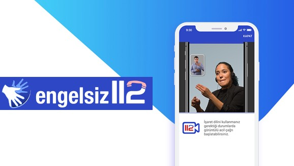

Engelsiz 112 Projesi ile ülkemizde yaşayan işitme ve dil-konuşma engelli kişilerin acil yardım hizmetlerine hızlı, etkin ve kolaylıkla ulaşabilmelerinin sağlanması hedeflenmektedir. Bu Kapsamda; işitme ve dil-konuşma engelli kişilere ilişkin veritabanı oluşturularak, 112 Acil Çağrı Merkezi Çağrı Alma ve Yönlendirme Yazılımına entegre edilip, engelli kişilerden gelen aramalarda sistemin çağrı alıcıyı uyarması sağlanması amaçlanmıştır. İşitme ve dil-konuşma engelli kişilerin acil yardım hizmetlerine ulaşmakta karşılaştıkları zorluklar tespit edilmiştir.
22-28 Nisan 2012 tarihleri arasında İspanya’ nın Santiago De Compostela şehrinde Reach 112 Projesi kapsamında engellilere yönelik uygulamalar incelenerek Ülkemizde uygulanabilirliğine ilişkin rapor hazırlanmıştır.
Avrupa Komisyonu tarafından desteklenen Reach 112 Projesinin amacı, işitme ve dil-konuşma engelli vatandaşların, akıllı telefonlarla (smartphone) eş zamanlı yazışmalarını, görüntülü işaret dili ile iletişim kurmalarını ve sesli konuşma - dudak okuma yöntemlerini kullanarak Acil Yardım Merkezleri’ ne ulaşmalarını sağlamaktır. Haziran 2009 ‘da başlatılan Reach 112 Projesi, İspanya, Hollanda, İngiltere, Fransa ve İsveç ülkelerinde pilot olarak uygulanmış, 27-28 Haziran 2012 tarihinde İspanya’nın Santiago de Compostela şehrinde yapılan Reach 112 Final Konferansı ile sonlandırılmıştır.
Engelsiz 112 uygulaması, engelli vatandaşlarımızın acil durumlarda ilgili 112 birimine hızlıca ulaşabilmelerini sağlamak üzere İçişleri Bakanlığı bünyesinde geliştirilmiştir. İşaret dili bilen uzman çağrı alıcılarımız, vatandaşın ihtiyacını belirledikten sonra ilgili kuruma gerekli bilgileri sağlayarak, ekiplerin en kısa sürede olay yerine sevk edilmelerini sağlamaktadır.
Engelsiz 112 Projesi, engelli vatandaşlarımızın, ücretsiz olarak telefonlarına/ tabletlerine indirecekleri uygulama aracılığıyla 112 Acil Çağrı Merkezi ile anında iletişime geçmelerine imkan sağlamaktadır. Engelli vatandaşlarımız dilerse uygulama üzerinden sağlık problemlerini kayıt edebilir, acil durumda ulaşılacak yakınlarının iletişim bilgilerini sisteme girerek 112 personelinin “Acil Çağrı” anında bu bilgileri görmesini sağlayabilir. Böylece süreçte daha etkin ve hızlı hizmet verilmesi mümkün olabilecektir.
Ülke genelinde sadece Ankara AÇM lokasyonu kurulan, Yeni Nesil Engelsiz 112 merkez uygulaması sayesinde tüm çağrıların tek bir merkezden karşılanması sağlanmıştır.